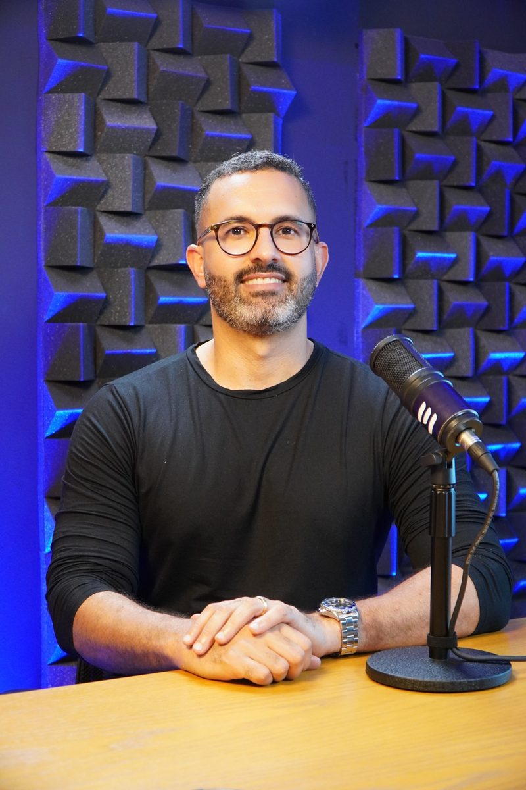

Uma preparação completa, do zero ao avançado, com o método exclusivo da Comunidade do Contador Concursado — o mesmo que aprovou o Felipe em 5 concursos públicos.
De 1 a 2 horas de estudo por dia: o tempo que sobra de quem já trabalha.
7 dias de garantia — se não for para você, devolvemos tudo
Você tem o diploma, tem o CRC, fecha o balanço que sustenta a empresa dos outros — e no fim do mês o salário não muda. Não é falta de esforço: ninguém te mostrou como se prepara para concurso de contador, e estudar como se estuda para faculdade não funciona aqui.
A responsabilidade é sua, a assinatura é sua, o risco é seu — e o contracheque não acompanha nada disso.
Abre a matéria que der na cabeça, sem ordem e sem noção de peso. No fim do mês estudou muito e avançou pouco.
Passa semanas num assunto que a banca cobra uma vez a cada cinco provas — e chega despreparado no que cai em todas.
Terminou o curso com a sensação de ter aprendido e parou na primeira questão. Assistir não é o mesmo que saber resolver.
São duas habilidades diferentes, e a faculdade só ensina a primeira. Quem passa não é quem sabe mais teoria: é quem estuda as matérias certas, na ordem certa, do jeito que a banca cobra — e treina questão até a prova virar rotina.
Esse caminho existe, está mapeado e cabe em 1 a 2 horas por dia. É exatamente isso que a Comunidade do Contador Concursado entrega.
Você não começa estudando conteúdo. Começa montando o plano — porque é o plano que faz os outros onze meses renderem.
Mentalidade, leitura de editais, ciclo de estudos e o seu planejamento personalizado. Você sai sabendo exatamente o que fazer em cada dia.
Pública, Geral, Custos e AFO. O núcleo técnico que decide a prova de contador — estudado pelo recorte do que cai, não pelo livro inteiro.
Administrativo, Constitucional e Português. As matérias que eliminam candidato bom em contabilidade e despreparado no resto.
Revisão pelo Método 3R, análise da banca do seu concurso e administração do tempo de prova.
Estudar sem método é encher um balde furado. O 3R é o ciclo que transforma aula assistida em questão respondida certo no dia da prova.
Apostila objetiva, sem enrolação — e o seu resumo em cima dela.
Questões da banca do seu concurso, do básico ao nível de prova.
Retomada programada, para o conteúdo não escapar no meio do caminho.
Metade do curso é estratégia — a parte que ninguém ensina e que decide a aprovação. A outra metade é o conteúdo técnico que a prova cobra.
Certo ou errado, com erro que anula acerto. Exige leitura fina.
Enunciado longo e cálculo aplicado. Cobra interpretação.
Direta e literal. Premia quem domina a letra da norma.
Forte em cálculo e contabilidade societária.
Contabilidade Pública cai nas quatro. Mas o jeito de cobrar muda tanto que um candidato preparado para uma pode reprovar na outra sem ter estudado menos.
O curso mapeia as quatro principais bancas do país: o que cada uma cobra mais, como escreve o enunciado e onde costuma derrubar o candidato.
A maior parte dos candidatos descobre o concurso tarde demais — quando sobra pouco tempo de preparação, ou quando a inscrição já fechou. Não é falta de estudo: é falta de acompanhamento.
Por isso a preparação vem com o Radar de Concursos: os certames da área contábil do Brasil inteiro reunidos num lugar só, atualizados toda semana e na palma da sua mão.
Cebraspe · inscrições abertas
FGV · edital publicado
Vunesp · banca definida
Cesgranrio · inscrições abertas
E elas exigem a mesma formação que você já tem. Abaixo, a remuneração inicial que os próprios editais destes concursos divulgaram — são cargos de contador, não de outra área.
| CAGE · Rio Grande do Sul | R$ 35.100,00 |
| BNDES | R$ 20.900,00 |
| TRT 2ª Região | R$ 14.852,66 |
| Tribunal Superior Eleitoral | R$ 13.994,00 |
| DNIT | R$ 12.300,00 |
| Câmara de Campinas | R$ 9.887,80 |
| SEFAZ · São Paulo | R$ 9.494,00 |
| Prefeitura de Uberlândia | R$ 6.311,00 |

Ele não montou esse método em sala de aula. Montou depois de ser demitido, estudando com o tempo que sobrava — e foi aprovado cinco vezes. O método que você vai receber é o que ele usou, não teoria de professor que nunca prestou concurso.
A maior parte dos cursos de concurso foi montada para parecer completa. Este foi montado para caber na sua rotina e cair na sua prova.
| Contador Concursado | Cursos genéricos | |
|---|---|---|
| Material | ✓Apostilas objetivas, no recorte do que cai | ×500 horas de videoaula para assistir |
| Tempo de estudo por dia | ✓1 a 2 horas | ×4 horas ou mais |
| Planejamento | ✓Você aprende a montar o seu, do seu jeito | ×Não existe — você se vira |
| Análise de banca | ✓4 principais bancas, uma a uma | ×Conteúdo igual para qualquer prova |
| Foco do curso | ✓Aprovação no concurso de contador | ×Atender todo mundo ao mesmo tempo |
| Quem responde sua dúvida | ✓Quem já passou em concurso | ×Central de atendimento |
Um ano de preparação completa por menos do que um mês do salário do cargo que você está buscando.
Esse é o valor da página. No WhatsApp o time tem uma condição melhor para quem está decidido a começar agora — é só pedir a sua.
Quero ser Contador ConcursadoQuero ser ConcursadoAtendimento humano · 7 dias de garantia
Você tem 7 dias para assistir às aulas e analisar o material inteiro. Se achar que não é para você, devolvemos 100% do valor — sem formulário, sem justificativa, sem perguntas.
Daqui a um ano você vai estar um ano mais perto do cargo — ou exatamente no mesmo lugar, fazendo o mesmo balanço para o mesmo patrão. A diferença entre as duas versões cabe em 1 a 2 horas por dia.